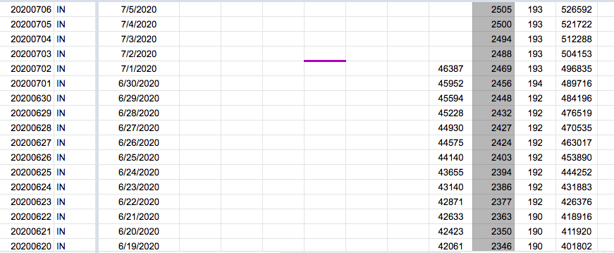

| Date | Number | Title |
|---|---|---|
| November 25, 2020, 6:46 PM PST | 979 | [IN] Patch 11/13-11/15 Last Update ET |
| October 16, 2020, 5:25 PM PDT | 899 | [IN] Indiana posted a complete dataset for PCR testing, positives and positivity rates |
| October 16, 2020, 5:24 PM PDT | 898 | [IN] backfill total tests pcr and positive tests pcr from state provided data |
| July 1, 2020, 6:25 AM PDT | 561 | [IN] Cases - PCL Historicals and WS2 |
| April 17, 2020, 2:25 PM PDT | 212 | IN: cume hospitalizations=2,026 recoveries(discharges)=1,384 reported 4/17 |
| March 11, 2020, 9:20 AM PDT | 4 | IN: rebuild urlwatch on EC2 to deploy custom JSON filter |
#979: [IN] Patch 11/13-11/15 Last Update ET
Issue number 979
hmhoffman opened this issue on November 25, 2020, 6:46 PM PST
State: IN
Dates affected: 11/13, 11/14, 11/15
Describe the issue: On November 13, 2020 through November 15, 2020, the Last Update ET for Indiana was incorrectly input as 11:59 instead of 23:59.
Comments
#899: [IN] Indiana posted a complete dataset for PCR testing, positives and positivity rates
Issue number 899
space-buzzer opened this issue on October 16, 2020, 5:25 PM PDT
Labels Data quality
Indiana updated their dataset to include positive PCR test results, in addition to all existing fields that include Positive PCR tests and Unique people tested (for PCR tests). Link to dataset: https://hub.mph.in.gov/dataset/covid-19-county-wide-test-case-and-death-trends/resource/5ff3931f-aa68-4ee6-ac1d-d6c5d6cca50a
We should use this dataset to complete our time series for Total PCR Tests and to backfill Positive PCR Tests
Comments
Dup of #898
#898: [IN] backfill total tests pcr and positive tests pcr from state provided data
Issue number 898
muamichali opened this issue on October 16, 2020, 5:24 PM PDT
Labels Data quality
State or US: Indiana
Describe the problem A clear and concise description of what the data problem is.
Link to data source Provide links to original data sources that we can refer to, like a state COVID website.
Comments
Link to dataset: https://hub.mph.in.gov/dataset/covid-19-county-wide-test-case-and-death-trends/resource/5ff3931f-aa68-4ee6-ac1d-d6c5d6cca50a
Replaced the existing time series we collected, that started on 31-07-2020 with the time series from the posted dataset, that started on 26-02-2020. It also included filling positive PCR test results time series for the same period
#561: [IN] Cases - PCL Historicals and WS2
Issue number 561
qpmnguyen opened this issue on July 1, 2020, 6:25 AM PDT
Labels PCL/SVP Historicals
Cases reported in IN were not clearly annotated as confirmed cases. However, this number was still reported in the confirmed cases column (Positive Cases (PCR)) from 4/29 to 6/30. Should correct historicals and WS2 as needed.
Comments
BEFORE -

AFTER - Corrected historicals by removing the value from the positive cases (PCR) column, as IN lumps confirmed and probable values.
#212: IN: cume hospitalizations=2,026 recoveries(discharges)=1,384 reported 4/17
Issue number 212
catawbasam opened this issue on April 17, 2020, 2:25 PM PDT
Labels stale
source "State delivers statistics on COVID-19 hospitalizations, recoveries" From https://www.kpcnews.com/covid-19/article_18b77c65-03aa-55b9-b08e-7a269dee372d.html
Stats are not yet added to the state's dashboard, but sounds like they will be regularly reported.
Comments
This issue has been automatically marked as stale because it has not had recent activity. It will be closed if no further activity occurs. Thank you for your contributions!
This issue has been closed because it was stale for 15 days, and there was no further activity on it for 10 days. You can feel free to re-open it if the issue is important, and label it as "not stale."
#4: IN: rebuild urlwatch on EC2 to deploy custom JSON filter
Issue number 4
lucasgonze opened this issue on March 11, 2020, 9:20 AM PDT
IN: Ken Riley setup a custom JSON filter (for ARCGIS embed) which should work, but need to get urlwatch re-built on the EC2 box before we can deploy the filter. if Zach Lipton can assist here, that’d be great (not sure how he is building the forked version of urlwatch on the box).
(Quoting @Joshua Ellinger)
Comments
Is this still open?
@joshuaellinger my work has migrated away from code towards product, so I am not the right person to own this.
Is this still open?
@joshuaellinger my work has migrated away from code towards product, so I am not the right person to own this.
BEFORE:
AFTER: